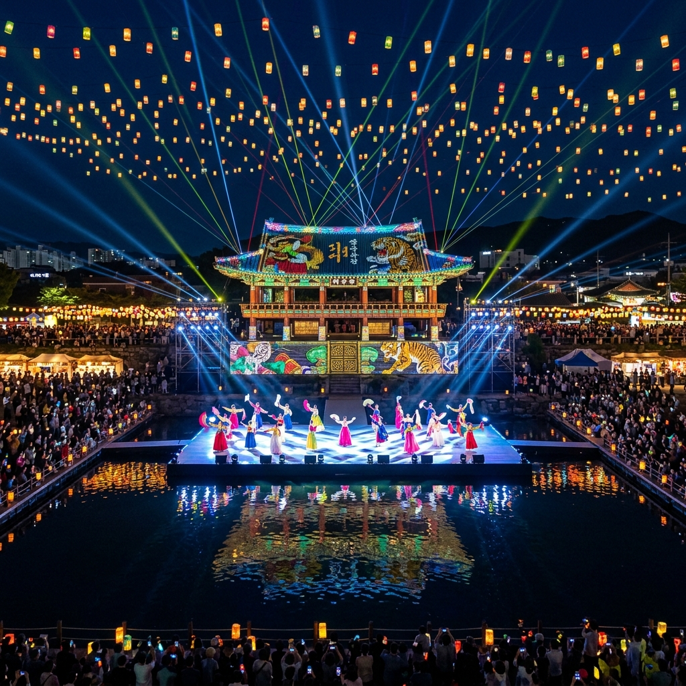
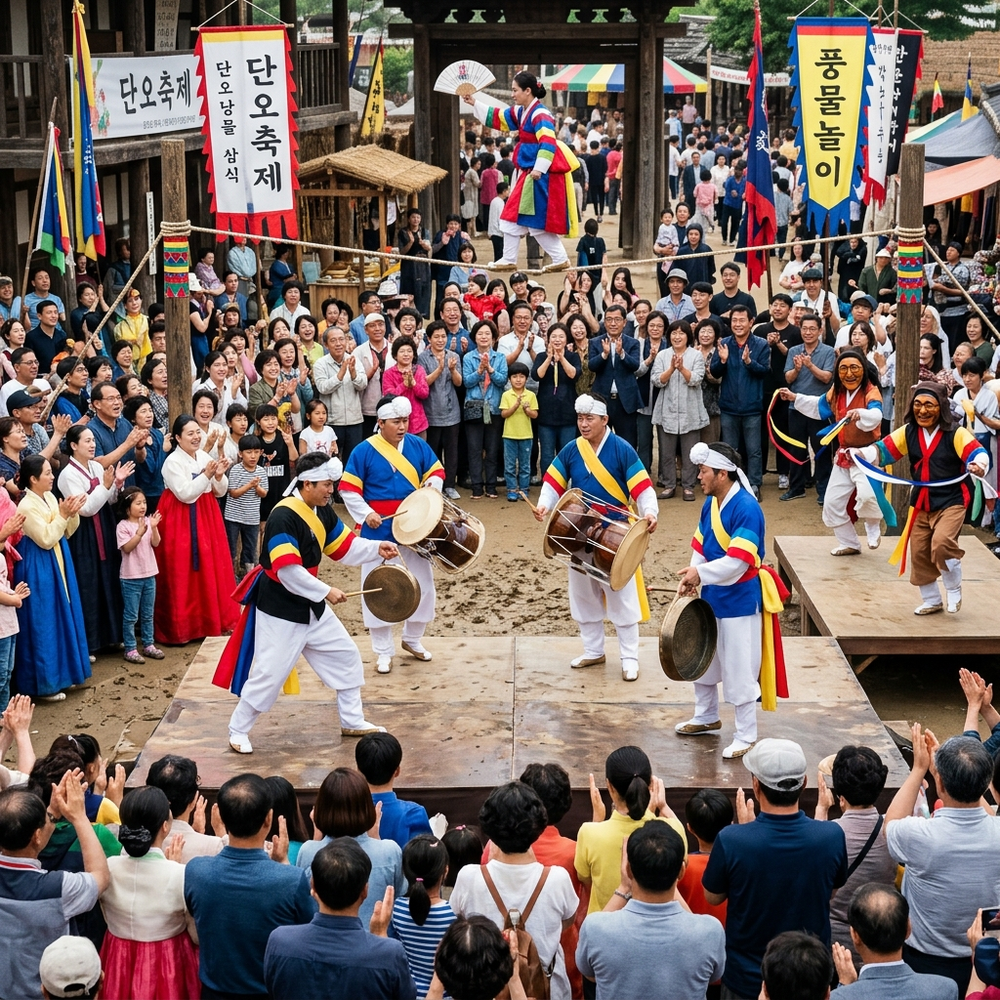
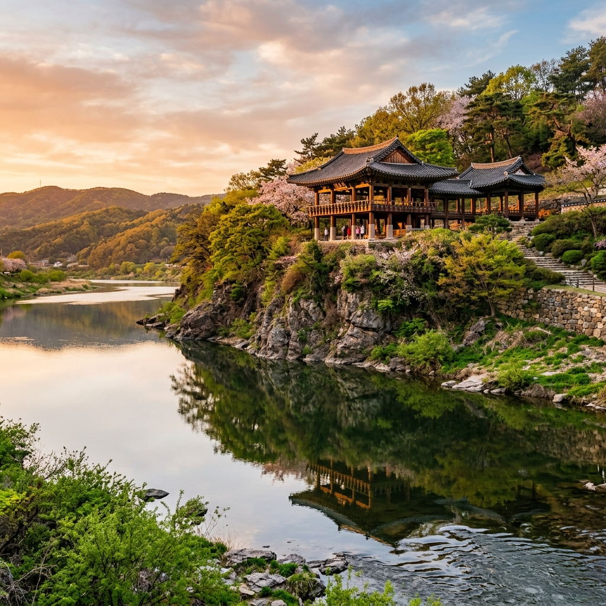

밀양 아리랑대축제 2026: 영남루 실경 멀티미디어 공연과 전통 난장 완벽 가이드
강물 위로 누각이 떠오르고, 그 위로 수만 개의 빛이 쏟아집니다. 밀양 아리랑대축제는 영남 최고의 누각 영남루(嶺南樓)를 배경 삼아 밀양강 수면을 무대로 펼쳐지는 실경 멀티미디어 공연을 중심으로, 전통 아리랑 가락과 민속 난장이 어우러지는 종합 문화 축제입니다. 2026년 제29회 행사는 5월 중순 밀양 도심 일원에서 5일간 열립니다. "아리아리랑 쓰리쓰리랑" 구성진 가락이 강물에 녹아드는 그 현장으로, 지금 바로 안내해 드립니다.
1. 밀양 아리랑, 왜 가장 애절한 민요인가
한국의 3대 아리랑으로 손꼽히는 밀양아리랑은 경상남도 밀양 지역에서 전승되어 온 독특한 향토 민요입니다. 흔히 알려진 '아리아리랑, 쓰리쓰리랑, 아라리가 났네' 후렴구는 경기민요의 아리랑보다 훨씬 경쾌하고 강렬한 리듬을 갖고 있어, 처음 들었을 때 민요보다 흥겨운 가요처럼 느껴지는 분이 많습니다.
밀양아리랑의 가사에는 아랑의 전설이 깊이 얽혀 있습니다. 조선 중기 밀양부사의 딸 아랑이 부당한 죽임을 당한 뒤 원통함을 호소했다는 이 전설은 수백 년간 입에서 입으로 전해지며 밀양아리랑의 정서적 뿌리가 되었습니다. 실제로 영남루 인근에는 아랑의 원혼을 달래기 위해 세워진 아랑사(祠)가 지금도 남아 있어, 단순한 노래가 아닌 역사·전설·문화의 복합 유산으로서 밀양아리랑의 위상을 보여줍니다.
이 정서를 현대적인 무대 언어로 번역한 것이 바로 축제의 핵심 공연인 밀양강 실경 뮤지컬입니다. 수백 명의 배우와 무용수, 대형 수상 무대, 3D 레이저 매핑 기술이 결합된 이 공연은 매년 관람객들로부터 "국내 최고 수준의 야외 실경 공연"이라는 찬사를 받고 있습니다.

영남루와 밀양강을 배경으로 펼쳐지는 실경 멀티미디어 공연 / AI 제작 이미지
2. 2026년 밀양 아리랑대축제 공식 일정 및 주요 프로그램
제29회 밀양 아리랑대축제는 2026년 5월 중순(통상 5월 14일 전후)에 개막해 5일간 밀양 영남루 일원, 밀양강변, 밀양시민공원에서 동시 진행됩니다. 정확한 날짜와 세부 프로그램은 밀양문화관광재단 공식 홈페이지(miryang.go.kr) 및 밀양시 공식 SNS 계정에서 3월 말~4월 초에 최종 공지됩니다.
주요 프로그램은 크게 다섯 축으로 구성됩니다. 첫째는 축제 최고 하이라이트인 밀양강 실경 뮤지컬 공연으로, 야간 시간대 영남루를 배경으로 약 90분간 진행됩니다. 둘째는 전통 난장으로, 줄타기·탈춤·풍물패·각설이 타령 등 전통 연희 100여 단체가 축제 기간 내내 노천 무대에서 공연합니다. 셋째는 전국 아리랑 경창 대회로, 전국 각지에서 올라온 국악인과 아마추어 소리꾼들이 밀양아리랑의 정통 가락을 겨룹니다.
| 프로그램 | 내용 | 비고 |
|---|
| 밀양강 실경 뮤지컬 | 영남루 배경 수상 무대 야간 공연 (90분) | 유료·사전 예매 권장 |
| 전통 난장 | 줄타기, 탈춤, 풍물 등 전통 연희 | 무료 관람 |
| 아리랑 경창 대회 | 전국 국악인·아마추어 경연 | 무료 관람 |
| 민속 체험 마당 | 투호, 윷놀이, 씨름, 장구 등 | 무료 참여 |
| 밀양 먹거리 장터 | 지역 특산물·향토 음식 부스 100여 개 | 현장 구매 |
3. 영남루 실경 공연: 밀양강을 무대로 한 스펙터클
영남루(嶺南樓)는 진주 촉석루, 평양 부벽루와 함께 조선 3대 누각으로 손꼽히는 보물(보물 제147호)입니다. 밀양강 절벽 위에 우뚝 선 이 누각은 야간 조명 아래서 보면 마치 공중에 떠 있는 것처럼 보일 정도로 위용이 넘칩니다. 이 극적인 배경을 그대로 활용한 실경 공연은 기존의 무대 공연과는 차원이 다른 감동을 줍니다.
공연은 아랑의 전설을 모티프로 구성된 스토리라인을 따라 전통 무용, 판소리, 3D 레이저 매핑, 수중 불꽃 등을 결합한 형식으로 진행됩니다. 영남루 외벽에 투사되는 미디어아트 영상은 낡은 목조 건물을 순식간에 살아있는 캔버스로 변신시키는데, 강물에 반영된 영남루의 빛이 두 배로 확장되는 효과는 그 자체로 한국 야외 공연의 새로운 경지를 보여줍니다.
공연 관람 좌석은 강변 지정 좌석(유료)과 인근 산책로 자유 관람(무료)으로 나뉩니다. 유료 지정석에서는 음향과 시야가 최적화된 감상이 가능하며, 자유 관람 구역에서도 영남루 전체 풍경을 감상하는 데에는 부족함이 없습니다. 공연 1시간 전에 현장에 도착해 자리를 선점하는 것을 권합니다.
4. 전통 난장과 거리 예술: 축제 현장 분위기 완벽 안내
밀양 아리랑대축제의 또 다른 매력은 전통 연희의 살아있는 현장을 경험할 수 있다는 점입니다. 줄타기 명인의 아슬아슬한 공중 연기, 해학과 풍자가 가득한 탈춤, 꽹과리와 장구가 어우러지는 풍물 한마당이 축제장 곳곳에서 동시에 펼쳐집니다. 이 연희들은 단순한 구경거리가 아니라 수백 년 동안 이 지역 사람들이 삶의 고단함을 달래온 방식 그 자체입니다.
특히 각설이 타령은 어른들에게는 추억을, 아이들에게는 신선한 충격을 주는 콘텐츠입니다. 구수한 사투리와 현대 개그를 뒤섞은 즉흥 가사에 관객들이 따라 부르다 보면 어느새 모두가 한 가족처럼 웃고 있습니다. 민속 체험 마당에서는 투호, 윷놀이, 활쏘기 등 전통 놀이를 직접 즐길 수 있어 아이를 동반한 가족 관광객에게도 충분히 매력적인 공간입니다.

풍물패, 줄타기, 탈춤이 어우러지는 전통 난장의 현장 / AI 제작 이미지
5. 밀양 3대 먹거리: 돼지국밥, 은어구이, 땡초불고기
밀양을 방문했다면 반드시 챙겨야 할 로컬 먹거리가 있습니다. 첫 번째는 돼지국밥입니다. 경남 지역의 대표 국밥 문화는 밀양에서도 강하게 살아있으며, 특히 시내 재래시장 근처의 오래된 국밥집에서 맛보는 진한 뼈 육수 국밥은 아침 식사로 완벽합니다. 된장이나 새우젓을 섞어 간을 맞추는 방식이 낯설 수 있지만, 한 번 맛보면 그 깊은 감칠맛에 바로 단골이 됩니다.
두 번째는 밀양강 은어구이입니다. 밀양강은 맑은 1급수를 유지하는 강으로, 이 강에서 잡은 은어는 살이 단단하고 수박향이 나는 것으로 유명합니다. 5~6월이 은어의 최대 성수기이므로 축제 기간은 은어를 먹기에 가장 좋은 타이밍입니다. 강변 식당에서 소금 구이로 내오는 은어는 뼈째로 씹어 먹는 것이 정석이며, 그 특유의 향이 다른 민물고기와는 비교가 되지 않습니다.
세 번째는 땡초불고기입니다. 청양고추보다 더 강한 매운맛으로 유명한 밀양의 '땡초'를 고기와 함께 볶아낸 이 요리는, 자극적인 매운맛을 즐기는 사람이라면 꼭 도전해 볼 만한 로컬 특식입니다. 처음에는 눈물이 나올 수도 있지만 그 다음 한 입에 중독되는 맛입니다.
6. 명소 연계: 얼음골, 표충사, 밀양댐 드라이브
축제 외에도 밀양에는 볼거리가 넘칩니다. 가장 신기한 자연 명소는 얼음골(천연기념물 제224호)입니다. 영남알프스 자락 해발 600m 지점 바위 틈새에서 여름에는 얼음이 얼고 겨울에는 따뜻한 바람이 나오는 역기후 현상이 펼쳐지는 곳입니다. 5월에는 아직 얼음이 일부 남아 있는 경우가 있어, 봄과 겨울이 동시에 공존하는 신기한 장면을 포착할 수 있습니다.
표충사(表忠寺)는 임진왜란 때 승병을 일으킨 사명대사를 기리는 사찰로, 신라 시대 창건된 유서 깊은 가람입니다. 경내에는 삼층석탑과 대광전 등 보물급 문화재가 있으며, 봄철 사찰 주변의 벚꽃과 신록이 어우러지는 풍경은 방문객들에게 오래도록 기억됩니다. 밀양댐에서 내려다보는 밀양호 드라이브 코스는 파란 하늘과 초록 산이 호수에 반영되는 5월의 절경을 선사합니다.
7. 주차장 및 교통: KTX 밀양역 직결 최대 장점
밀양의 가장 큰 교통 이점은 KTX 밀양역이 서울(부산 방면)과 직결되어 있다는 점입니다. 서울 KTX 기준으로 밀양까지는 약 2시간 10분~2시간 30분 소요되며, 역에서 영남루까지는 택시로 약 10분입니다. 자가용 이용 시 경부고속도로 밀양IC 또는 남해고속도로 동밀양IC를 이용하며, 영남루 인근 공영 주차장이 무료 또는 저렴한 가격으로 운영됩니다.
축제 기간에는 KTX 밀양역과 버스터미널에서 축제장까지 무료 셔틀버스가 운행되는 것이 관례이므로, 자차 없이 대중교통으로 방문하는 분들도 큰 불편 없이 이동할 수 있습니다. 부산에서는 고속버스 또는 시외버스로 약 50분이면 밀양에 도착하므로, 부산 여행과 연계하는 1박 2일 코스로 짜는 것도 매우 효율적입니다.
8. 숙박 전략: 밀양 시내 vs 양산 배후 숙박 비교
밀양 시내 숙박은 선택지가 많지 않고 축제 기간에는 일찍 마감됩니다. 영남루 인근 중급 호텔과 모텔이 주축을 이루며, 온라인 예약 사이트 기준으로 1박 7~12만원 선입니다. 수요 급등으로 인해 축제 기간에는 가격이 20~30% 오르는 경우가 많으니 최소 3~4주 전 예약을 강력히 권장합니다.
대안으로는 양산시(밀양에서 차량 30분)에 숙박하는 방법이 있습니다. 부산 근교인 양산은 숙박 인프라가 더 풍부하고 가격도 안정적입니다. 밀양에서 공연을 관람한 후 양산으로 이동해 숙박하고, 다음 날 통도사나 부산 연계 일정을 추가하는 것도 훌륭한 여행 플랜입니다. 단, 늦은 야간 실경 공연 종료 후 이동이 불편할 수 있으니 대리운전 서비스 이용 또는 지정 드라이버 동반을 고려하세요.

밀양강 절벽 위에 우뚝 선 영남루의 황금빛 저녁 풍경 / AI 제작 이미지
9. 에디터의 마무리: 아리랑, 소리로 듣고 빛으로 느끼다
밀양 아리랑은 이미 수백 년 전부터 이 땅 사람들의 기쁨과 슬픔을 담아온 그릇입니다. 한 해에 단 며칠, 그 소리가 강물과 하늘과 고대 누각 위에서 빛과 만나는 순간이 바로 밀양 아리랑대축제입니다. 스펙터클한 무대와 기술적인 완성도 너머에, 수백 년의 한(恨)과 흥(興)이 함께 살아 숨 쉬는 그 공기를 직접 마셔보시길 권합니다.
공연이 끝나고 관람객들이 하나둘 영남루 계단을 내려오는 그 시각, 밀양강의 물결은 여전히 조용히 누각의 빛을 담은 채 흐릅니다. 그 풍경을 뒤로하고 걷는 밤길에서 비로소 '아, 내가 특별한 것을 보았구나'를 실감하게 될 것입니다.
#밀양아리랑대축제
#밀양아리랑
#영남루
#실경공연
#밀양여행
#5월축제
#경남여행
#전통문화축제
#밀양강
#은어구이